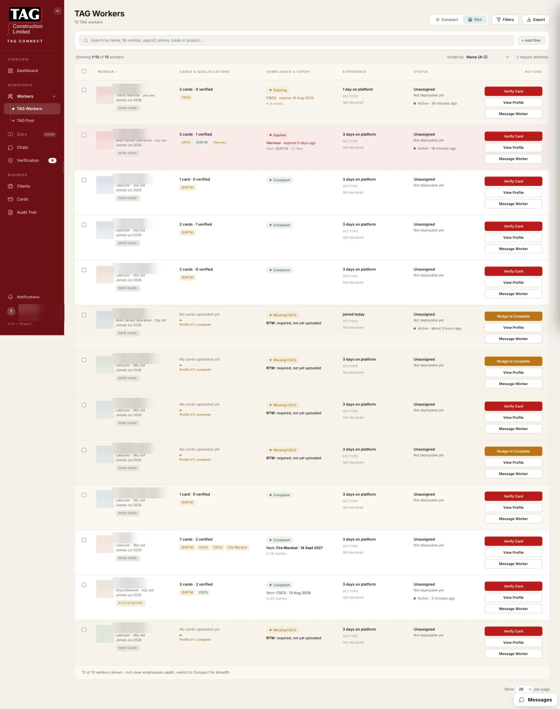

4. Managing workers¶
The Workers page is your working roster — every worker, their status, and the action each one needs, in one table built for scanning hundreds of rows.

4.1 Two views of the same table¶
Switch between two densities with the view toggle (top right). Same workers, same order — different depth:
Eight tight columns for scanning volume: Worker (photo, name, trade, time on platform) · Tier · Cards ("12 cards · 9 verified") · Next expiry (date + how soon, urgency-coloured) · Compliance pill · Project (or "Unassigned") · Last seen (activity dot) · Actions. Use it for: working through the roster, triage, bulk awareness.
Six deeper columns, roughly double the row height: cards shown as scheme pills (green = verified, "+3" overflow) · compliance with the specific failing card named · experience as tenure plus top sector chips (built from real project history, never self-claimed) · deployment status ("Ready to deploy" / on project / "Not deployable yet"). Use it for: shortlisting, deciding between candidates, prep before a client call.
4.2 Read the colours first¶
Row tinting is the table's loudest signal — triage before you read a single word:
| Row colour | Meaning | Default position |
|---|---|---|
| Red tint | A required card is expired — the worker is non-compliant now | Top of the table |
| Amber tint | Something expires within ~30 days | After red |
| No tint | Nothing urgent | Sorted by recent activity |
The default sort is your morning to-do list: critical first, warnings next, everyone else by activity. Sorting by any column is one click on its header; click again to reverse.
4.3 Finding people: search & filters¶
Search (top of the table) matches names and key details as you type. Filters narrow the roster by the dimensions you actually shortlist on — tier, compliance status, project/unassigned, trade, card schemes held, activity. Combine them freely: "Site Ready or above + compliant + unassigned" is the classic available-to-deploy shortlist.
The activity dot in Last seen: green = active this week, amber = this month, grey = gone quiet. A quiet dot on a good profile is a nudge candidate, not a lost cause.
4.4 Action buttons — the table tells you the next move¶
Each row's primary action button is contextual — the system picks the most useful next step for that worker's state:
| Worker's state | Primary action |
|---|---|
| Has an expired/failed required card | Verify (or resolve) — jump straight to the problem |
| Compliant, unassigned | Assign to a project |
| Assigned and working | Message |
| Inactive or incomplete profile | Nudge |
| Otherwise | View profile |
Every row's overflow menu (⋯) always carries the rest: profile, message, assign, request re-upload, audit trail.
4.5 Pinned views — save your filters¶
Any combination of filters + sort + view can be pinned: set the table how you like, click Pin this view, name it ("My compliance triage", "Ready to deploy — joiners"). Pins appear as chips above the table, one click to return, up to five. Pins are personal — yours don't affect colleagues.
4.6 Exporting¶
Export produces a spreadsheet of the table as currently filtered — what you see is what exports. Choose CSV or Excel. Use it for client submissions and offline lists — and remember export files leave the platform's protection: they contain personal data, so share them only where a spreadsheet of worker details belongs, and delete stale copies.
The whole chapter as one flow¶
The daily table routine drawn end to end — colour triage, fixing red, shortlisting, and the export gate:
flowchart TD
A(["Open Workers"]) --> B{"Tinted rows at the top?"}
B -- "Red rows" --> C["Open the worker"]
C --> D["Compliance summary names the failing requirement"]
D --> E{"Renewal already uploaded?"}
E -- "Yes, sitting in queue" --> F[/"Verify it now — Flow 3"/]
E -- "Yes, but rejected" --> G["Re-request with the reason — Flow 5 action card"]
E -- "No" --> H["Request re-upload / chase renewal"]
F --> I{"Verified and in date?"}
I -- "Yes" --> J["Row returns to normal"]
I -- "No" --> H
B -- "Amber rows" --> K["Expiry within ~30 days"]
K --> L["Chase the renewal NOW — calm at day -25 beats crisis at day +1"]
B -- "Clean" --> M{"Today's task?"}
M -- "Shortlist for a project" --> N["Filter: trade + tier Site Ready or above + compliant + unassigned"]
N --> O{"Candidates found?"}
O -- "Yes" --> P["Switch to Rich view — compare cards, sectors, tenure"]
P --> Q["Assign to project"]
Q --> R["Placement recorded with dates — becomes their real site history"]
O -- "No" --> S{"Why empty?"}
S -- "Tier too strict" --> T["Relax to Site Starter + check what each is missing (breakdown drawer)"]
T --> U["Tell the near-misses their one missing step"]
S -- "All assigned" --> V["Check placements ending soon"]
M -- "Routine sweep" --> W["Sort by last seen — nudge good profiles gone quiet"]
M -- "Client needs an export" --> X["Filter first, then Export — the file mirrors the filter"]
X --> Y{"Recipient entitled to this data?"}
Y -- "Yes" --> Z["Send via agreed channel; delete stale copies"]
Y -- "No" --> ZZ["Narrow the filter or decline — exports leave the platform's protection"]This diagram also lives in the product flow maps with its six siblings.
Troubleshooting this chapter¶
| You see | It means | Do this |
|---|---|---|
| A worker you know exists isn't in the table | Filters are hiding them | Clear filters — check the active-filter chips above the table |
| Tenure looks too short for an experienced worker | Tenure = time on TAG, not in the industry | Read experience from the Rich view's history chips instead |
| A row is red but the worker insists their card is fine | Their renewal may not be uploaded/verified yet | Open the profile — check card expiry dates and prompt the re-upload |
Was this page helpful? Tell us what was missing.